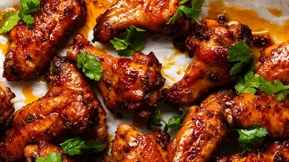
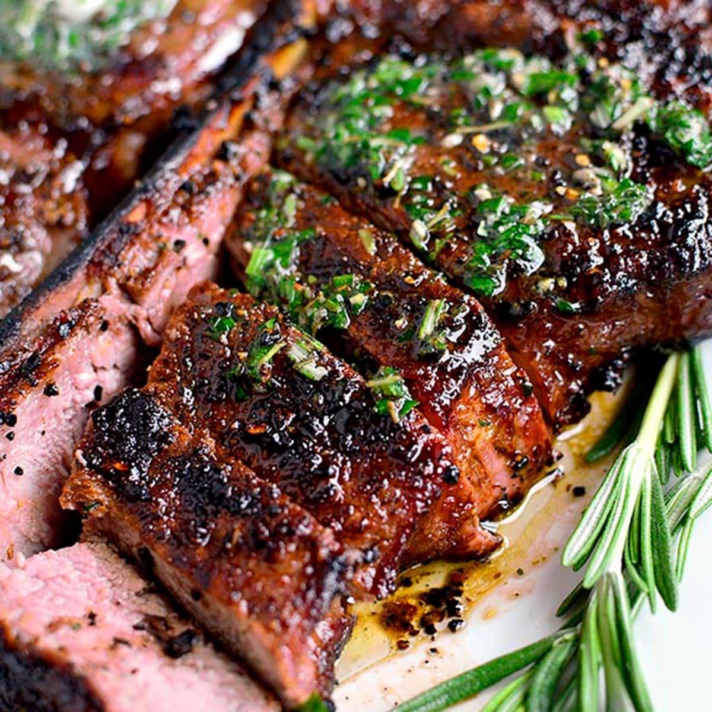

Cake
Cakes are sweet baked goods typically made from flour, sugar, eggs, and a leavening agent like baking powder or baking
soda. They come in various types, such as sponge cakes, butter cakes, and flourless cakes, and can be simple or
elaborate. Cakes are often decorated with icing, fruits, or nuts and are commonly served during celebrations like
birthdays and weddings. The word "cake" originates from the Old Norse word "kaka," and its history dates back to ancient
times.
Do you have a favorite type of cake?
Chicken Wings
Chicken wings are a popular dish made from the wing sections of a chicken, typically divided into drumettes and flats.
They can be prepared in various ways, such as frying, baking, grilling, or smoking, and are often coated in flavorful
sauces like Buffalo, barbecue, or honey garlic. Originating in Buffalo, New York, in the 1960s, the iconic Buffalo wings
are deep-fried and tossed in a tangy hot sauce. Chicken wings are a versatile and beloved finger food, commonly served
at gatherings, sports events, or as appetizers.
Do you have a favorite way to enjoy them?
Steak
Steak is a slice of meat, typically cut across the muscle fibers, often including a bone. It is most commonly made from
beef but can also come from other animals like pork, lamb, or even fish. Steaks are usually grilled, pan-fried, or
broiled and are celebrated for their rich flavor and tenderness. Popular cuts include ribeye, sirloin, and tenderloin,
each offering unique textures and tastes. The word "steak" originates from the Old Norse word "steikja," meaning "to
roast on a stick." Steak is a culinary favorite worldwide, often paired with sauces, sides, and seasonings to enhance
its flavor.
Do you have a preferred way to enjoy steak?